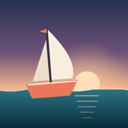

Marée
Un jeu d'arcade à un doigt pour iPhone : pilote la mer, pas le bateau.
Nous contacter
Un bug, une question, une idée ? Écris-nous, nous répondons en général sous quelques jours.
palotte@gmail.comPour un problème, indique si possible le modèle de ton iPhone, ta version d'iOS et ce qui s'est passé.
Comment jouer
Maintiens ton doigt sur l'écran pour faire monter la mer, lâche pour la faire redescendre. Ton voilier suit les vagues.
Passe au-dessus des rochers (mer assez haute) et sous les ponts (mer assez basse). Attrape les étoiles avec ta voile pour gagner des points, et frôle les obstacles pour enchaîner les bonus « Ras ! ».
Questions fréquentes
Le jeu ne vibre pas.
Vérifie que les vibrations du système sont activées dans Réglages › Sons et vibrations › Vibrations du système.
Comment remettre mon record à zéro ?
Le record est enregistré uniquement sur ton iPhone. Supprimer puis réinstaller l'app le remet à zéro.
Mon record passe-t-il d'un appareil à l'autre ?
Non, pas pour l'instant : chaque appareil garde son propre record.
Faut-il une connexion Internet ?
Non. Marée fonctionne entièrement hors connexion.
Y a-t-il des publicités ou des achats intégrés ?
Non, aucun.
Confidentialité
Marée ne collecte aucune donnée personnelle. Le jeu ne demande aucun compte, n'affiche aucune publicité, n'utilise aucun outil de mesure d'audience et n'envoie rien sur Internet.
La seule information enregistrée est ton meilleur score, stockée localement sur ton appareil. Elle n'est jamais transmise et disparaît si tu supprimes l'app.
Pour toute question sur la confidentialité, écris à palotte@gmail.com.
Dernière mise à jour : 25 octobre 2026.